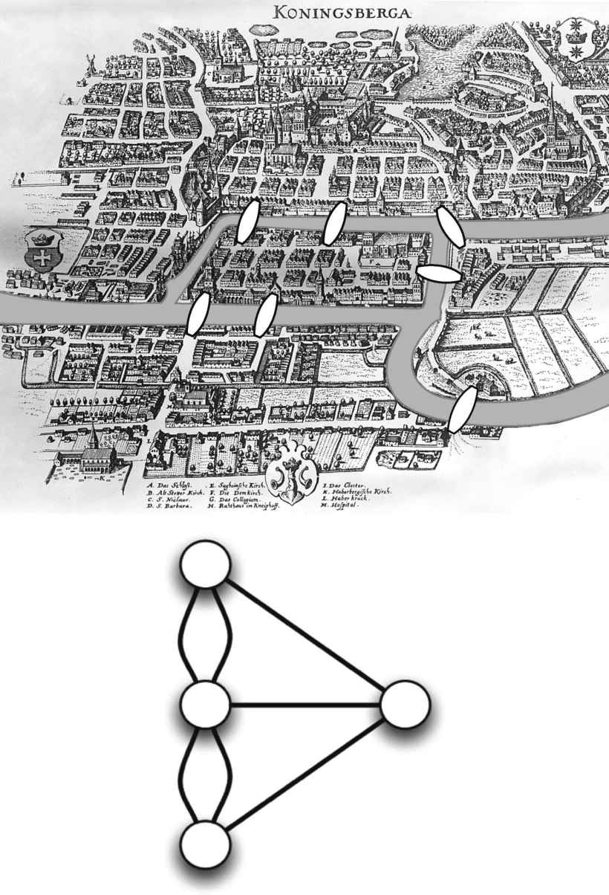
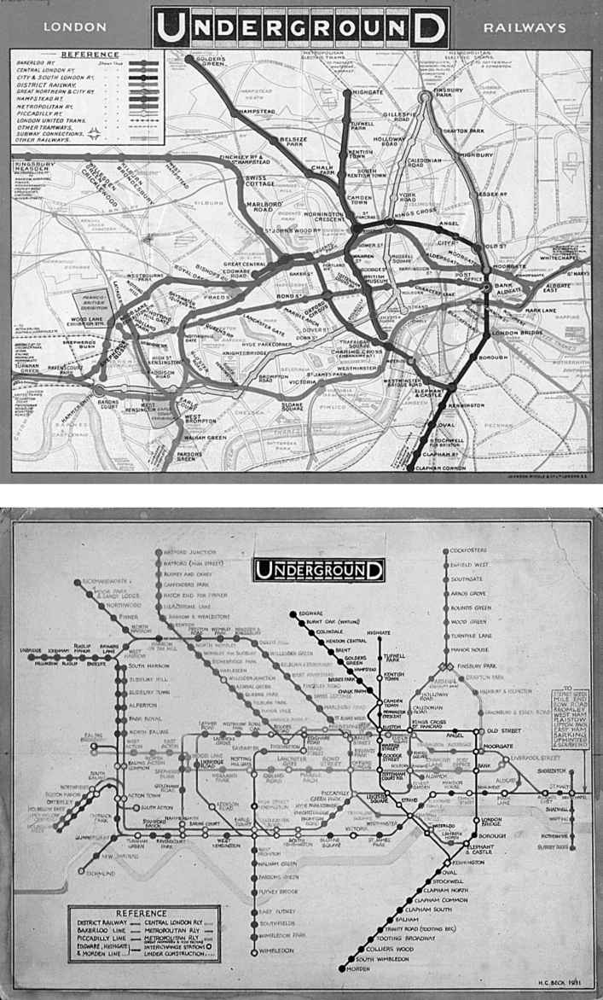
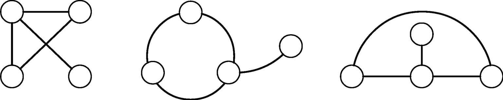
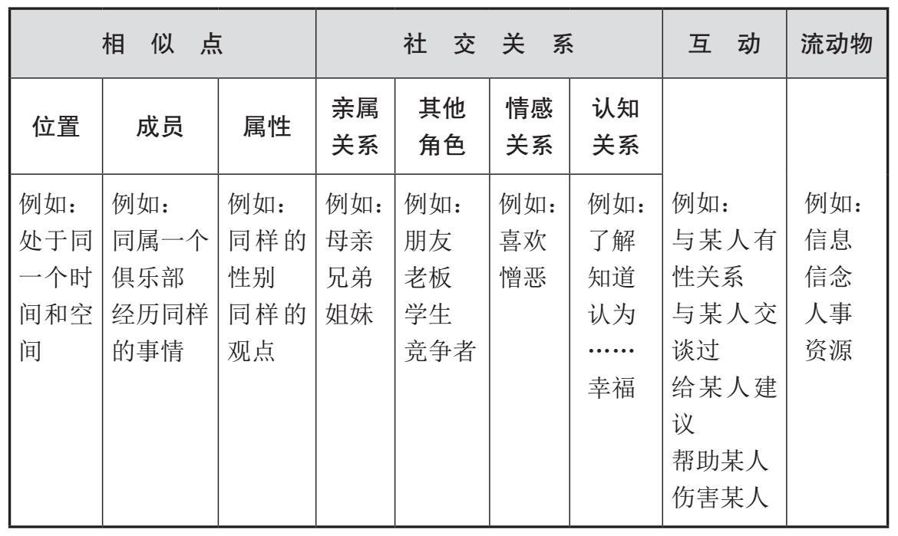

穿越欧拉之桥
在俄罗斯的加里宁格勒市，一座名为奈佛夫的岛屿坐落于普雷格尔河内。该市300年前曾隶属于普鲁士王国，彼时唤作哥尼斯堡，而奈佛夫岛与该市其余部分则由七座桥相互连接（图2上）。当时的城里流行着一个谜题：是否可能在不重复走过一座桥的情况下，遍历所有七座桥？之前没有任何人成功做到这一点。另一方面，对这种走法的可行性，当时也不存在任何形式证明。而其解决方案来自古往今来最著名的数学家之一。1736年，莱昂哈德·欧拉以一种不寻常的方式画出了哥尼斯堡市的地图。他将陆地和岛屿的部分表示为点，而桥则为连接各点的线（图2下）。
当我们以这种方式看待该问题，事情就变得更加容易了。通过展示城市的网络结构，欧拉证明了谜题中的走法不可能。他的解释基于以下观察：若此种走法可行，则路程沿线所有点的连接数必为偶数。这是因为每当某人通过一座桥进入该市的任何部分时，他必须通过另外一座不同的桥离开。总之，每个区域必须有偶数座桥，比如2座、4座、6座等等。只有起点和终点可以有奇数个连接数：起点只能有一座桥，终点亦复如此。不幸的是，哥尼斯堡地图所有顶点的连接数均为奇数。因此，人们不可能一次性遍历所有桥而不重复。

图2 版画中的哥尼斯堡（上），即现在的加里宁格勒，它表现了哥尼斯堡七桥之谜，莱昂哈德· 欧拉将其表示为一幅简图（下）
哥尼斯堡地图这种简单的数学图是图 的首个例子。数学家将构成这幅图的点和线分别称为顶点 和边 。如今，欧拉已经因为开启了一整个建立在图解分析基础之上的数学分支而被人们铭记。他的这种直觉可被认为是网络科学的首个创立契机。在他之后，许多数学家都曾研究过网络的形式特征，科学家则将它们应用于更加广泛的问题之中：1845年G.R.基尔霍夫的电路，1857年A.凯利的有机成分异构体，1858年由W.R.哈密顿提出的“哈密顿圈”，等等。其中一个著名的应用是于19世纪中期提出的“地图着色问题”。当时，地理学家正在设法计算出绘制地图所需的最小颜色数量，其中相邻的国家应有不同的颜色。这不仅仅是个理论问题：考虑到为数众多的国家和印刷行业中数量有限的不同油墨，使用最少数量的颜色显得至关重要。从经验角度看，三种颜色不够用，四种颜色则似乎很奏效。人们直到1976年才证实了解决方案确为四种颜色。证明基于将一张地图以图的方式呈现出来，其中的节点为国家，边则画在两个共享一个边界的国家之间。
出走的女孩，澳大利亚人和芝加哥工人
1932年的秋天，在两个星期内有14名女孩从位于纽约州的哈德森女子学校中出走。这种出走率不同寻常。学校管理层于是决定调查这些女孩的个性，以便理解这种现象。由于没有发现女孩们的性格有特殊差异的明显证据，精神科医生雅各布·莫雷诺便提出了一种完全不同的解释。他指出这种大规模的出走情形是由出走女孩们在社交网络中的位置引发的。莫雷诺和海伦·詹宁斯一起利用社会计量学 ，即一种能够识别个体之间关系的技术，绘制了学生之间的社会关系图。他们发现，这些关系是出走的想法在女孩们之间传播的主要渠道。个人在友谊网络中的位置对其模仿出走女孩的行为至关重要。
莫雷诺是第一批将网络理念应用于社会的研究者之一。继欧拉的直觉之后，他的研究成为网络科学创立的第二个关键步骤，它开启了网络科学最重要的分支之一：社交网络分析。30年之后，人类学家采用了类似的方法研究部落的亲属关系，比如对澳大利亚阿伦达人部落的研究。在这个案例中，互为亲属的人们之间的联系图得到绘制。研究人员发现，他们得到的结果图对应着优雅的数学结构。这些以及其他结果都表明，在人类社会的无序之下，暗含着精巧的社会结构，甚至是普遍法则。从那时起，社会科学便广泛运用网络概念来呈现社会结构。许多其他的研究也遵循着这些最初的研究方法，比如，对南美洲妇女群体（A.戴维斯、 B.B.加德纳以及M.R.加德纳等人，1941）、芝加哥工厂的工人群体（E.梅奥，1939）、学童之间的友谊（A.拉波波特，1961），以及对科罗拉多州斯普林斯市吸毒者之间关系的研究（理查德·B.罗滕伯格等人，1995），诸如此类。
随机联系
网络科学创立的第三个重要时刻则随着保罗·埃尔德什和阿尔弗雷德·雷尼这两位数学家在1959年到1961年间一系列论文的发表而到来。埃尔德什乃20世纪最重要的数学家之一，人们称他为“数字情种”。这句话不全对——他也钟爱着图形。这两位理论家研究了某种表示图的数学模型，其中的顶点完全随机地连接。数学研究人员雷·萨洛莫诺夫和阿纳托尔·拉波波特最早于1951年在一篇论文中提出了这种后来被称作随机图 的模型。
随机图是一种十分简化的模型，其特征与那些真实网络截然不同。比如，随机性和概率的确可能在结交新朋友的过程中发挥重要作用，但是友谊网络的形成肯定也与许多其他因素相关，比如社会阶层、共同语言、吸引力等等。然而，随机图模型仍然非常重要，因为它量化了完全随机网络的性质。随机图能用作任何真实网络的基准或无效状态 。这意味着，我们能将随机图与真实世界的网络进行对比，进而了解概率在多大程度上塑造了后者，以及其他标准在何种程度上起了作用。
以下是构建随机图的最简单方法。我们取所有可能的顶点对，然后为每一对顶点抛掷硬币：如果结果是正面朝上，则画出一个连线；否则我们转向下一对顶点，直到遍历所有顶点对（这意味着我们以 p =1/2的概率绘制顶点连线，但可能会用到 p 的任意值）。通常，图的创建及相关研究都不是人们手动完成的。科学家运用计算机程序，在图纸或电脑屏幕上绘制生成网络图。然而，当网络规模很大时，这项工作就会变得越发困难。此外，人们仅通过目测很难研究相互交织的结构。运用数学工具将图作为抽象对象进行研究能够提供更好的量化的见解。计算机对此也有帮助：模拟使我们能够在计算机的“头脑”中将这种模型可靠地具象化，然后对其进行测量，就像它是个真实的物体一样。如果我们想要将抽象模型与真实世界网络进行比较，现在只需要比较两种情况下的测量数据。
自上世纪60年代被引进以来，随机图模型已成为最成功的数学模型之一，尽管它与现实的联系并不紧密。现在，它是所有网络进行比对的基准，因为任何对此模型的偏离都表明了在许多现实世界网络中存在着某种结构、秩序、规律性和非随机性。
捕获信息之网
当纽约、马德里、伦敦分别于2001、2004、2005年遭遇死灰复燃般的恐怖袭击之后，一些政府机构提议存储电子信息流数据，并将其作为一项反恐措施。在这项提议中，公民之间多年的电话和电邮都会以安全的名义被记录在案。具体的通信内容则不会被储存，仅记录信息的发出者和接收者便已足够（有时候还包括通信的时间和地点信息）。正如警方所知晓的那样，即便这种简单的谁与谁之间相互关联的图景也是追踪人们活动的强大工具。的确，略略看一下某人的电话记录，我们就可以推断出他的习惯、朋友圈以及各种相关的其他数据。
这是网络科学基本方法的一个非常实际也颇具争议的例子。复杂系统由图——通过同样的相互作用而彼此关联的一组等价元素——表示，却忽略了其组成部分的详细特征，以及它们之间关系的具体性质。这一做法似乎过于激进，但它仍然让我们能够捕获到比乍看之下可预期到的更多的信息。这种方法的一个有效证明便是内嵌于诸多在线社交网络中的朋友推荐系统，比如“脸书”或“领英”。其中的想法很简单：你很可能认识你朋友的朋友。虽然很简单，却在多数情况下都有效。这种方法被称为有根据的推测 ，它也是很多在线商店的书籍或其他商品推荐系统的基础。这些公司的软件利用了与每个消费者相关的商品网络。这就是为何商业公司会储存大量的电子数据，包括电子邮件和在线社交网络数据——它们知道这种信息十分有用。
网络科学的基本方法可应用于广泛的系统之中。例如，一个由数百个物种组成的生态系统，其中每个物种通过不同的捕食策略从其他物种中提取能量。在网络方法中，这种情况由一组相同的边连接起来的一组相同顶点表示。同样的策略被应用于从互联网（通过电话线、光纤电缆、卫星通信等方式连接起来的无数计算机、路由器和交互站点等）到人口族群（通过各种关系相互联系且拥有不同目的和身份的大量行动者）的各种系统之中。尽管网络方法消除了所考虑现象的许多个别特征，它仍然保留了个体的某些特征。也就是说，这种方法并不改变系统的大小——系统元素的数量，也不会改变相互作用的模式——元素之间的特定连接集合。然而这种简化的模型仍然足以捕获系统的特性。
从个体到群体
在处理多种不同元素以不同方式相互作用的情况时，存在两种可能的方法。第一种方法是确认这种情况中的基本成分以及它们之间的相互作用。通过研究每个元素本身，我们可以将系统的行为推导为个体元素的加总。例如，生态学家可以通过列出每个物种的猎物和捕食者来描述生态系统的特征。计算机科学家通过关注每个不同机器的特征和协议来描述计算机网络。心理学家则通过描述每个社交者在他的圈子中的行为来研究社会关系。与第一种策略不同，第二种策略旨在将许多元素组合成为若干同类的群体。例如，社会学家和政治学家通常按照社会阶层、性别、教育水平、种族、国家等因素对社会进行划分。
同样，流行病学家则常常将人口分成一组有限的“区划”：健康的、感染的、免疫的个体等。生态学家也能用同样的方法将所有在食物网中扮演类似角色的物种汇集成群组（即营养物种 ）。
网络方法试图补充这两种策略。若我们只关注个体元素的行为，许多现象就无法得到解释。例如，生态系统内物种的数量动态并不单单依赖于该物种自身的特征，猎物–捕食者相互作用的全局网络也必须考虑在内。另一方面，专注于大类的元素也可能没什么用。比如，一国发生的政治现象基本上不是由先前存在的国家认同引起的，而是该国内部社会关系的具体模式运作的结果。网络方法则介于通过单个元素和通过大群组进行的描述之间，并将二者连接起来。在某种意义上，网络试图解释一组孤立的元素是如何通过相互作用的模式转化为群体和共同体的。在与这种模式相关的所有情况下，网络方法都提供了重要的洞见。
地理与“网络图”
20世纪初，伦敦的地铁服务变得十分复杂，以至于人们必须不时地发布愈来愈多的地图以便为出行者提供向导。1931年，经过多次尝试，地铁公司的雇员亨利·贝克改变了绘制地铁路线图的标准。与那种将地铁路线嵌入伦敦实际地图之上的做法相反，贝克将它们置于抽象的空间中（图3）。站点由间隔合适的点表示，而线路的连接则全部变成了具有45或90度角的直线。这个地图无关车站的真实位置及其相互之间的实际距离，但它对乘客而言更加清楚且有用。乘用地铁网络的人对其地理特征不感兴趣，有车站的顺序和地铁路线的交汇信息便已足够。

图3 伦敦地铁的“度量”示意图（上）与“拓扑”示意图（下）。尽管车站的实际位置和相对距离都未呈现在拓扑图中，它却是地铁服务的更佳思维导图
亨利·贝克的伦敦地铁图基本上就是一个图。他解决映射问题的方案利用了网络方法的一个基本特征：在网络中，拓扑 比度量 更为重要。也就是说，何物与何物相互关联比它们相隔多远更加重要。换句话说，图的实际地理情形不如其“网络图”重要。这两个概念的差异如图4所示。从度量角度看图中呈现的三个图形有所不同。也就是说，空间中的节点位置和节点连线的长度有所不同。然而，从拓扑学的角度看，它们是相同的——它们只是同一个图的三种不同呈现方式。在网络的表示方式中，系统元素之间的关联比它们的相对距离以及在空间中的具体位置要重要得多。
对拓扑学的关注是网络方法的最大优势之一，当拓扑与度量相比更为适用时，网络方法就是有用的。例如，从纽约发送至伦敦某办公室的电子邮件会与来自其隔壁办公室的邮件同时抵达。即便在互联网这种嵌入地理空间的实体基础设施中，连接的模式也比物理距离更加重要。在社交网络中，拓扑的实用性意味着社会结构 很重要。里奥内尔·梅西是当今世界最好的足球运动员之一。然而，他的表现却随着他所效力球队（比如阿根廷国家队或者巴塞罗那足球俱乐部队）的不同而有所不同。一些社会科学家认为，梅西在阿根廷国家队中与其他队员之间的关系网络不同于他在巴塞罗那足球俱乐部队中的关系网络。根据他们的研究，这会导致球员在前一种情况下背负更重的“负担”，这至少能部分解释他在不同球队中的表现差异。类似的现象也出现在更加复杂的社交“游戏”中，个人在其中的境况会受到他或她在关系网络中所处位置的强烈影响。

图4 同一个图的三种不同表示
链条、网格和网络
网络方法将复杂系统简化为单一的点线架构。这是一个重大的简化，但其得出的结果图却可能不是那么容易得到解释：这便是图4所示的棘手例子展示的情况。甚至一幅仅由节点连接而成的链条图也可以是一个处理起来相当复杂的对象。一个链条可以代表比如搬运一桶水的消防队；或者物种的食物链，其中，第一个捕食第二个，第二个捕食第三个，以此类推；或者企业之间的供应结构——一系列公司中每个公司供给下一个公司。
想象一下五家公司（公司1，2，3，4和5）的生产链。在这个链条沿线，其中任何一家公司都能与其两个邻居之一达成交易。其中的规则为，每个公司只能签订一份合同——例如，如果公司3与公司2达成了交易，则它不能与公司4另有协议安排。给定了这个简单的结构和规则，结果便是位于节点1和节点5的公司议价能力更低，因为它们的选择更少。这导致公司2和公司4更加强大，并且（意外地）削弱了位于节点3上的公司。确实，节点3上的公司只得应付更加强大的公司，因此，它最终只能达成不那么有利的交易。简单如节点线性序列这样的事物确实产生了相当复杂的景观。社会学家将这个例子呈现的现象称为排斥机制 。这远非理论中的情况，而是经济学中经常能遇到的情形——当两个公司之间建立商业关系以排除第三方时便是这样。
为了进一步深入这个问题，人们必须考虑到现实中的系统绝少如链条这般简单。在过去，科学家用规则网格或晶格 表示复杂的系统，而非使用图。这些对象由许多元素组成——分别代表人、动物、计算机等等——它们通常按照规则的连接模式排列，例如棋盘上的棋子仅与其四邻的棋子相连。相对于用图表示而言，这种规则结构使得系统能够更容易被数学计算和计算机模拟这两种方式处理。
尽管格子相对于图而言更加简单，但它引入了强烈的限制条件。事实上，一个格子仅适于呈现经过精心设计或受到强烈约束的系统。比如，这些系统可能是某个计算集群的处理器阵列，或者某个嘈杂工作场所中彼此关联的工人之间的语言交流。
在格子框架中，每个节点都连接着固定数量的最近连接点，而在绝大多数真实情况中，这些连接则关联着数量可变的元素，无论它们彼此是邻近还是相隔很远。捕获这种混乱状态的能力是网络方法的最大优点之一。
大部分这种无序状态都被编码为某种关键的数量——度数 ，即附着于每个节点之上的边数。如果节点是网页，度数则表示了该网页与其他页面的链接数量。如果节点是物种，度数则表示了该物种赖以生存的物种数量。如果节点是一个人，度数则表示了其熟人的数量。这个圈子能与社会学家彼得·马斯登所谓的核心讨论网络 联系起来，即那些可与之讨论重要事宜或打发时间的人群（朋友、伙伴、家庭成员、现在和过去的同学、同事、邻居、俱乐部伙伴、专业顾问、咨询员等等）。
描绘关系
两个人之间可以有无限的可能关系。他们可能共有同样的态度、想法或性别，可能是朋友、亲戚或同事，也可能是性伴侣或者仅仅效力于同一个足球队。此外，这些关系中的两个或更多可以同时发生在同样两个人身上。其中一些是合作关系，另一些则表示公开的敌对，而介于两者之间的关系则有着广泛的可能。最后，一些关系可能仅仅单方面被感知到，而另一方则完全对其忽略（比如，摇滚明星的粉丝可能感觉自己与其有某种联系，而摇滚明星可能完全忽略了他们）。社会学将个体之间广泛的可能联系进行了分类（表1）。在社交网络中具有多种关系类型的倾向又被称为关系的多重性 。但这种现象也出现在许多其他的网络中——例如，两个物种可以通过不同的捕食策略而彼此关联，两个计算机则通过不同的有线或无线连接彼此关联等。
我们可以修改某种基本图来考虑关系的多重性，例如，为关系连线贴上特定的标签等。比如说，我们可以将某种关联是正面还是负面纳入考虑范围。物种通过捕食（负面）或共生（比如在开花植物和授粉者之间建立起的正面关系）而彼此关联。人们可以是敌人（负面）或朋友（正面）。一个网页则可以连接到另外一个网页以批评其内容（负面）或为其做广告（正面）。通过增添这个简单的二进制功能便让事情极大地复杂化了。想象一个由爱丽丝、鲍勃和卡罗尔组成的三人群体。当他们所有人由正面的关系联系时，一切都安好。又或者，爱丽丝和鲍勃可能是朋友关系，但他们二人均对卡罗尔抱有敌意。当情况相反的时候，事情就变得复杂了：爱丽丝与鲍勃和卡罗尔二人都保持着正面的关系，但鲍勃与卡罗尔之间却彼此憎恶。而当他们每个人都彼此憎恶的时候，情况就变得着实棘手了。根据社会学理论，第一种情况和第二种情况在结构上是平衡的 ，而第三种和第四种情况则相反。2006年，数学家蒂博尔·安塔尔和物理学家保罗·克拉皮夫斯基、西德尼·雷德纳将这个概念应用于第一次世界大战前六个欧洲国家之间外交联盟关系转变的分析之中。他们证明了这六国的联盟逐渐演化成了一种结构上平衡的状态，在这种情况下，强大的联盟得以建立，或者明确的共同敌人得以确定。这六国后来分裂为两个集团（一方为英国、法国和俄罗斯；另一方则为奥匈帝国、德国和意大利），每一方的成员国彼此在集团内相互结盟，而对另一方的所有国家保持敌对关系。这种情况出现后不久，战争便爆发了。这个例子表明，结构上的平衡并不必然就是有利的。

表1 社交网络关系的分类
图论让我们能为边编码更加复杂的关系，当关系并非对称的时候更是如此。狼捕食羊，博客链接到大报，一些人爱上另一些人；相反的情况绝少为真。在这种情况下，图中的关系乃某种单行道，我们可在其中朝着一个方向前进，但不能逆行。如果给边添加方向属性，则得出的结构为有向图 ，其中的关系由箭头指示。在这些网络中，我们有入度 和出度 分别测量节点向内与向外的连接数量。
到目前为止，我们所考虑的关系都是二进制的——它们仅有两个值。这种二分 关系要么存在，要么不存在：例如，与某人结婚或者被某人雇用。然而，这种关系在统计上都是例外：绝大21多数情况下，关系展现出广泛的强度变化。捕食以吃掉猎物的数量计算，网页则能被零星或大量的链接关联，而爱情的强度则从轻微的吸引到强烈的激情不等。这些进一步的特征对应于我们赋予关系的权重 。例如，加权网络 可能作为个体或事物之间不同交互频率的结果出现。
我们对基本图结构的其他修改也是可能的，且处理这些事物的技术非常有趣。比如，大部分社交网络研究致力于了解不同种类的关系如何互相影响。然而，网络方法的优点在于，在某些情况下，忽略所有或大多数具体细节是合理且有效的：有向网络变得无向，权重被移除，多重连接坍塌为某条单独的边等等。结果表明，这种彻底的简化仍然能够捕获大量信息。